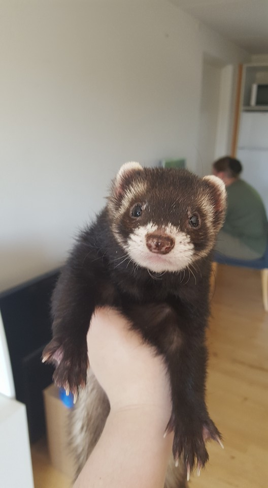
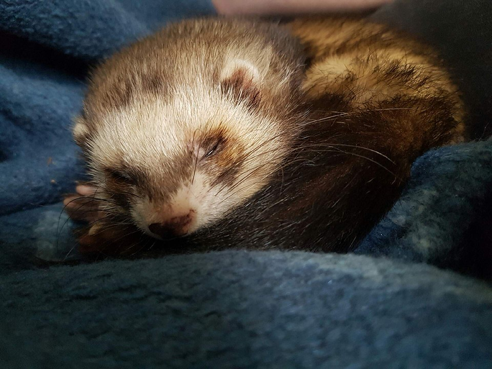

Patricia's hjemmeside
Personligt kan jeg godt lide at læse men jeg kan også godt lide at fotografere.
Dette er nogle eksempler på billeder jeg har taget samt lidt information omkring dem
  Alle disse billeder er taget af Patricia Poulsen
Alle disse billeder er taget af Patricia Poulsen
Det første billed er af london, hun var en meget bestemt pige og var meget besværlig at fotografere, da hun ikke ville stå stille.
Det andet billed er af Blitz, som også var besværlig at fotografere men det var også forvendtet da ilder normalt er besværlige at fortografere, da de har for meget krudt at komme af med til at stå stille
Det tredje og sidste billed blev taget i london 2018 i november måned.
Det er muligt at se flere af mine billeder på instagram. om du kan finde ved at søge på patriciabpoulsen